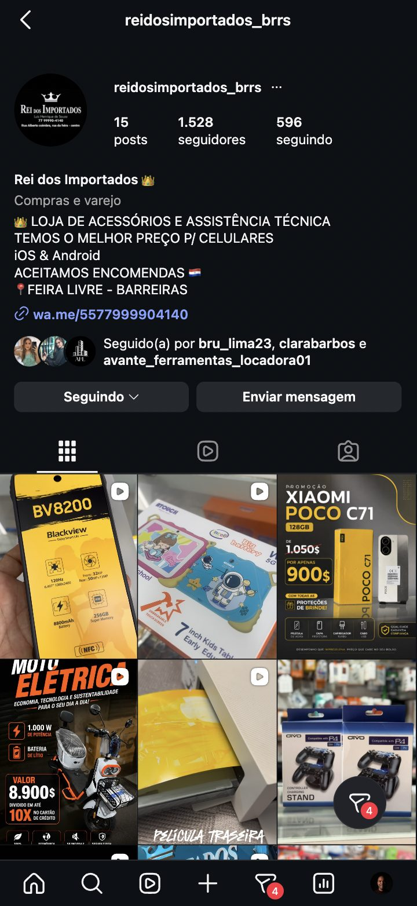

Dados do perfil (19/11/2026)
Usuário: @reidosimportados_brrs
Nome exibido: Rei dos Importados 👑
Bio: “LOJA DE ACESSÓRIOS E ASSISTÊNCIA TÉCNICA / TEMOS O MELHOR PREÇO P/ CELULARES / iOS & Android / ACEITAMOS ENCOMENDAS 🇵🇾 / FEIRA LIVRE - BARREIRAS” + link wa.me
Destaques: nenhum criado
Fixados no topo: nenhum post fixado — o espaço mais nobre do perfil está vazio
O que já funciona
- 1.528 seguidores com só 15 posts — a cidade já conhece a loja. Tem demanda represada esperando conteúdo.
- Link do WhatsApp clicável na bio — o caminho da venda já existe; falta mandar o cliente para ele em todo post.
- Preço exposto nas artes de promoção — como no anúncio do Poco C71 com kit de brindes: responde a primeira pergunta de quem compara.
- Fotos reais da loja e dos produtos — fachada, balcão e produto de verdade passam mais confiança que banco de imagens.
- Localização clara — Feira Livre de Barreiras na bio e endereço completo na logo. Ponto que todo mundo da cidade conhece.
O que precisa mudar
- Nome não aparece na busca — quem procura “celular Barreiras” ou “assistência técnica” não encontra um perfil chamado só “Rei dos Importados”.
- Bio toda em caixa alta e cortada — o texto some atrás do “...mais” e o diferencial das encomendas do Paraguai fica escondido.
- Zero destaques — o cliente novo não encontra preços, endereço, horário nem provas de clientes satisfeitos.
- Nenhum post fixado — quem abre o perfil cai direto num feed sem ordem, sem catálogo e sem apresentação.
- Preço escrito como “900$” — fora do padrão brasileiro. O correto é R$ 900; preço claro passa seriedade.
- Feed com 4+ estilos misturados — arte amarela, foto crua de caixa na prateleira, logo e fachada convivem sem padrão. O perfil parece de várias lojas.
- Assistência técnica quase invisível — metade do negócio não aparece no feed, e é o serviço que traz o cliente de volta todo mês.
- Mix de produtos sem hierarquia — moto elétrica, perfume e relógio dividem espaço igual com o carro-chefe: celulares.
TEMOS O MELHOR PREÇO P/ CELULARES
iOS & Android
ACEITAMOS... mais
O nome não tem as palavras que o cliente busca (“celular”, “Barreiras”). A bio em caixa alta cansa, aparece cortada no celular e esconde o maior diferencial: as encomendas do Paraguai.
🔧 Assistência iOS & Android
📦 Encomendas do Paraguai
📍 Feira Livre – Barreiras-BA
👇 Chama no WhatsApp
wa.me/5577999904140
147 de 150 caracteres — dentro do limite do Instagram, já contando emojis e quebras de linha. O link do WhatsApp vai no campo próprio de link e não entra na contagem. O campo “nome” passa a conter as palavras que o cliente digita na busca; a bio diz o que a loja vende, o diferencial, onde fica e o que fazer.
Capas criadas sob medida para o Rei dos Importados em 3D minimalista: objeto branco fosco sobre fundo grafite, mesmo estilo em todas — no padrão preto e branco da marca. Nenhuma capa leva texto: o nome entra no título do próprio destaque, como o Instagram exibe abaixo do círculo. Ordem pensada no caminho do cliente: ver os aparelhos → ver oferta → resolver conserto → encomendar → confiar → achar a loja.


Toque em “Baixar” para salvar a capa no celular em alta resolução e já aplicar no destaque do Instagram. Como hoje não existe nenhum destaque, o primeiro passo é gravar os stories-base de cada tema (a ADS envia o roteiro) e salvá-los nos destaques com essas capas.
Quem somos (vídeo)
Vídeo curto de até 30 segundos do Luís na frente da loja, na Feira: quem é, o que vende e onde fica. Gente de verdade falando olho no olho derruba o medo de golpe — nenhuma loja online tem isso. A ADS entrega o roteiro pronto.
Catálogo com preços
Carrossel com os celulares mais pedidos e o preço em R$ de cada um, sempre com o kit de brinde em cima do balcão. É o post que o cliente salva e manda para a família.
Prova de clientes
Antes e depois de um conserto real + cliente retirando aparelho na loja + prints de agradecimento no WhatsApp. Quem vê entende: aqui se compra, conserta e resolve.
Um padrão visual só
Todas as artes no mesmo estilo: fundo escuro, logo sempre no mesmo canto, preço sempre no mesmo lugar. Nada de alternar entre arte amarela, foto crua e logo solta.
Produto na mão, não na prateleira
Foto e vídeo sempre com o produto sendo usado ou segurado: celular ligado na mão, caixa de som tocando, relógio no pulso. Caixa fechada na prateleira não gera desejo.
Preço sempre em R$
Padrão único: R$ 900, nunca “900$”. E toda oferta mostra o kit de brinde (película, capa, carregador e cabo) ao lado do aparelho — é o empurrão que fecha a venda.
Celular e assistência são o carro-chefe
A cada 10 posts, 8 sobre celulares e assistência e 2 sobre os demais produtos. Conteúdo seguindo o padrão 3-1-1 da ADS: a cada 5 conteúdos, 3 para alcançar, 1 para aproximar, 1 para vender. Detalhado no calendário de conteúdo.
Toda legenda termina com um convite
“Chama no WhatsApp e garanta o seu 👇 link na bio” — em todo post. Post sem convite é vitrine sem porta.
Assistência aparece toda semana
Antes e depois de conserto, tela trocada na hora, bancada em ação. É o serviço que traz o cliente de volta todo mês e hoje está invisível no feed.

Simulação com todas as mudanças aplicadas: nome pesquisável, bio dentro do limite, link do WhatsApp e os 6 destaques com as capas novas. Abrir em alta resolução.


Perfil @reidosimportados_brrs antes da reestruturação — base de comparação para os próximos relatórios. Ver captura completa do feed.